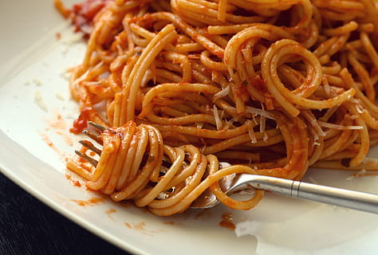

Spaghetti

Description
Spaghetti is long, thin pasta often served with flavorful sauces.
It’s simple, versatile, and widely loved.
Ingredients
- Spaghetti pasta
- Tomato sauce
- Garlic
- Olive oil
Steps
-
Cook pasta: Boil spaghetti in salted water until al dente, then drain.
-
Make sauce: Sauté garlic
(and onion if using) in olive oil, add tomato sauce and season with herbs and salt.
-
Combine: Toss the cooked spaghetti with the simmered sauce.
-
Serve: Top with Parmesan cheese (and meat or extras if desired).
Home